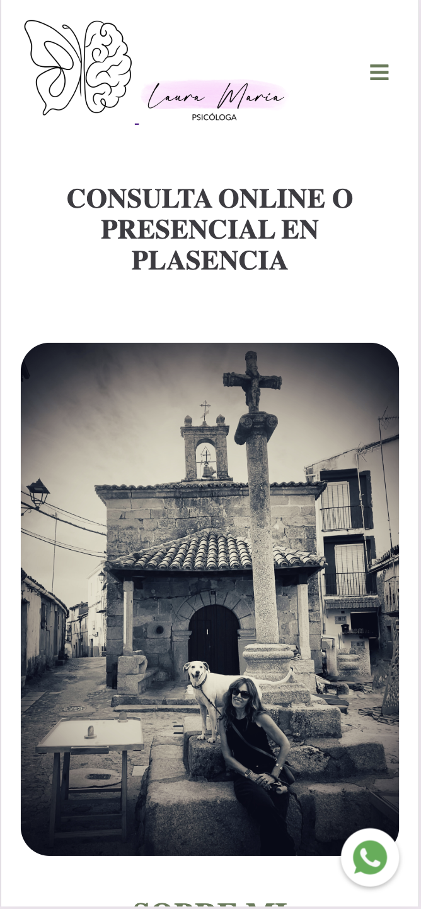
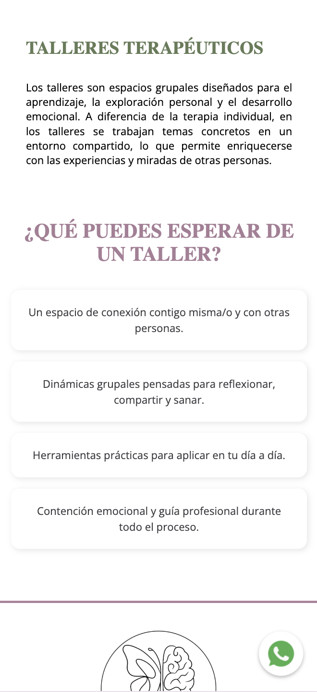
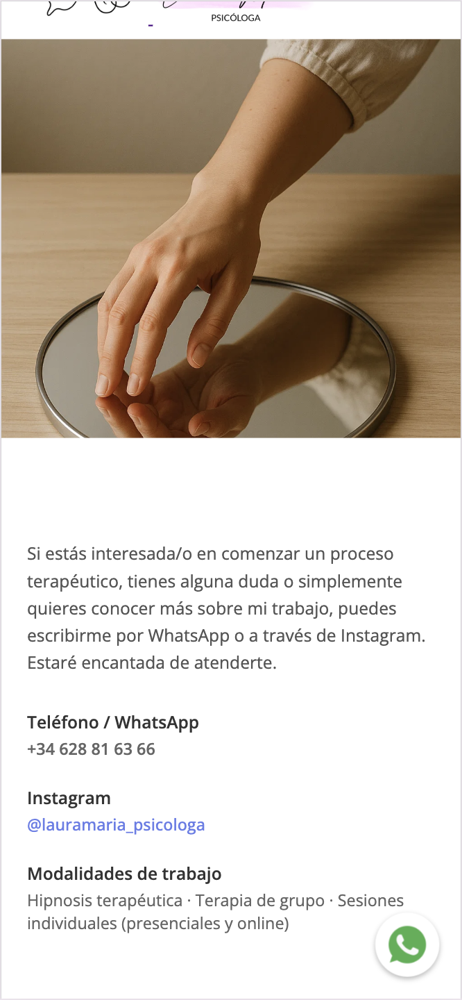

Diseñé y desarrollé la página web de Laura María, psicóloga, utilizando HTML, CSS y JavaScript. Desde el inicio quise que la web transmitiera calma, confianza y profesionalidad, pero al mismo tiempo que fuera moderna y fácil de navegar.
La estructura está pensada para que todo sea claro y accesible: secciones como Inicio, Sobre mí, Terapias, Hipnosis, Talleres y Contacto guían al usuario paso a paso para conocer los servicios de manera sencilla. Con CSS trabajé un diseño limpio, con colores suaves y tipografías elegantes, y añadí efectos y animaciones que le dan un toque dinámico sin recargar la experiencia.
También me enfoqué en que fuera 100% responsive, de modo que se vea y funcione bien tanto en móviles como en tablets y ordenadores. Además, integré accesos directos a WhatsApp e Instagram, lo que permite a los usuarios contactar de forma rápida y cómoda.
En resumen, el resultado es una página web atractiva, funcional y actual, que refleja la esencia del trabajo de Laura y a la vez ofrece a los visitantes una navegación fluida y agradable.